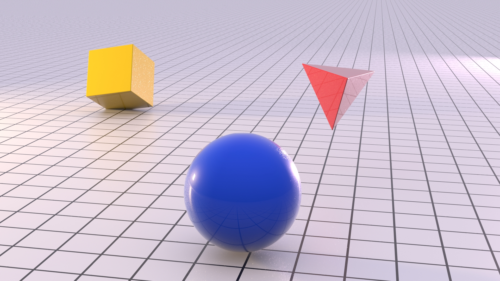
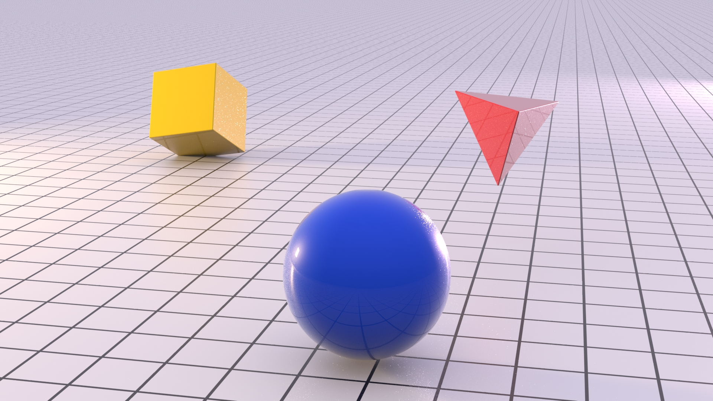
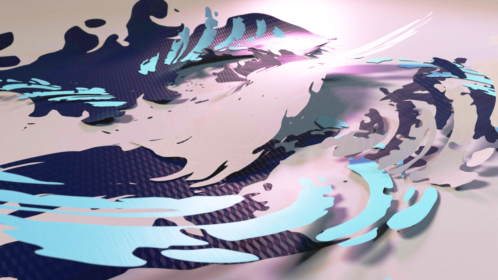
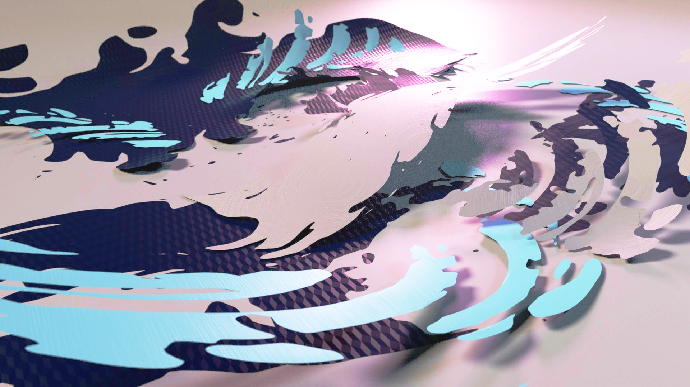

Stereo Convergence




Mouse over the image to set the desired convergence point, or using a touch screen, grab and drag the image up or down to the desired convergence point.
Mouse over the image to set the desired convergence point, or using a touch screen, grab and drag the image up or down to the desired convergence point.